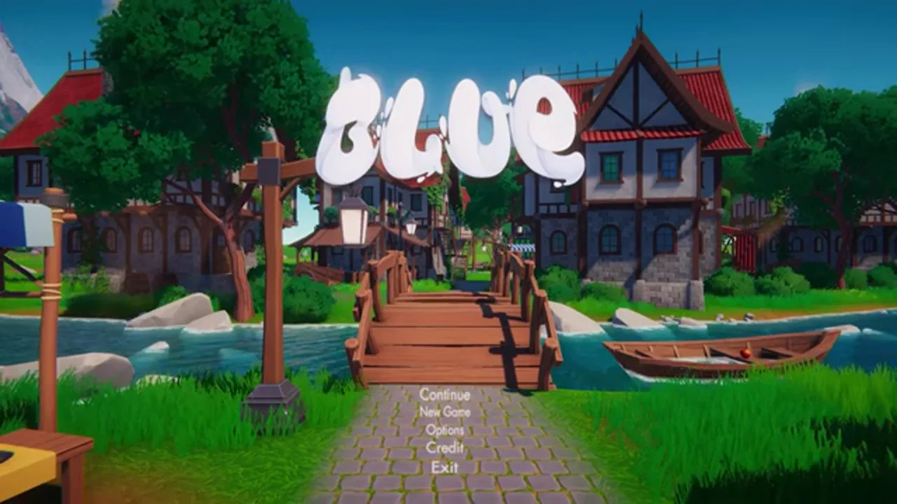
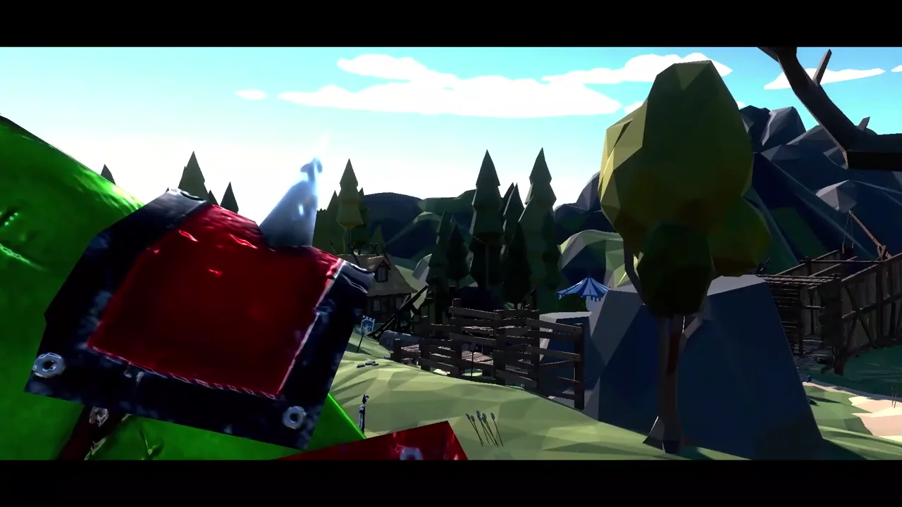
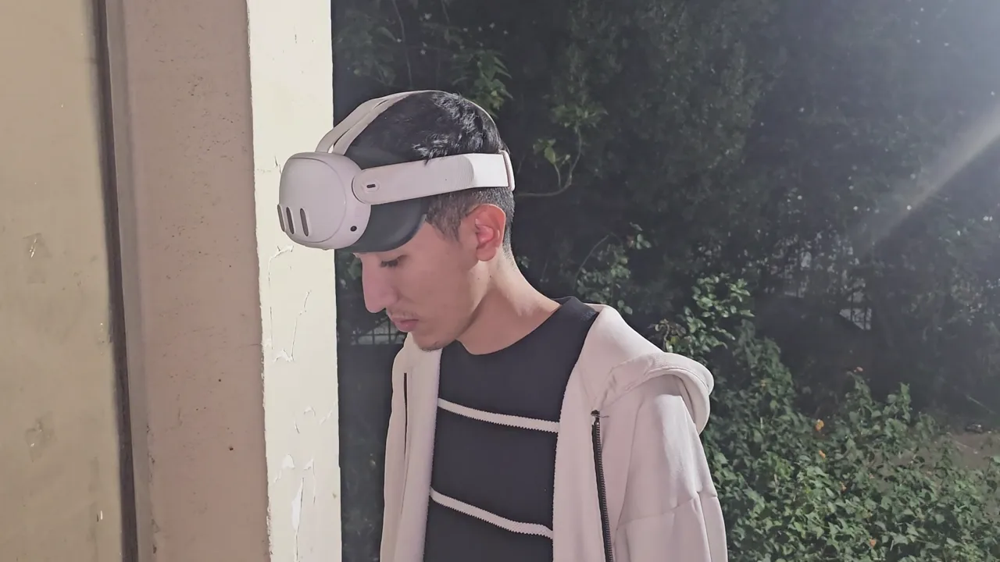
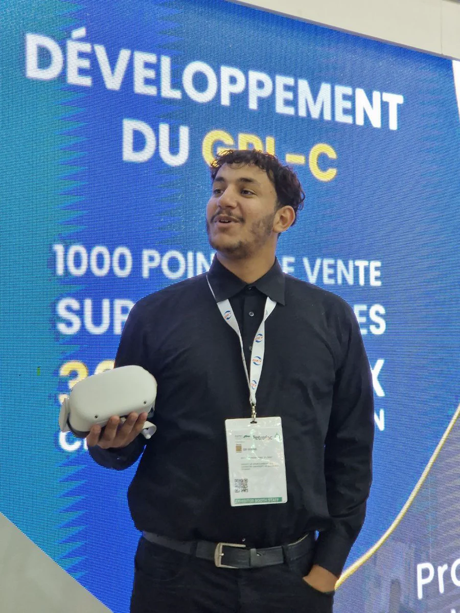

World
Champion
2023Champion
GDWC Fan Choice · Mobile
“Light On Light Off” won the fan-voted Mobile category in the Game Development World Championship 2022.
Game founder turned creative technologist
I’m Souhil Sid. I founded and led a game team, shipped interactive worlds, and grew that craft into serious games, XR training, digital twins and connected engineering experiences.



As founder and team lead at Develop Together Corp, I worked with a multidisciplinary indie team to turn small ideas into released games—designing mechanics, building worlds, coordinating people and learning how to ship.
Explore the team archive on Instagram ↗From an Algerian student team to international stages, every milestone sharpened the next chapter.
“Light On Light Off” won the fan-voted Mobile category in the Game Development World Championship 2022.
A water-focused serious game and learning experience recognized globally.
2024Rapid product thinking, technical execution and a collaborative pitch.
2023Recognized through NASA Space Apps for challenge-led innovation.
2022The same skills behind a convincing game world—systems, feedback, interaction and storytelling—now power my digital twins, industrial training and phygital work.
I bridge software, engineering models, 3D interaction and physical systems—from concept to an experience people can use.
Gameplay loops, progression, educational mechanics, storytelling and released indie experiences.
VR and AR for equipment inspection, site familiarization, technical learning and spatial understanding.
Process visualization, IoT data, controls, dashboards, prediction and what-if analysis.
Sensors, embedded systems and computer vision connected to interactive digital worlds.
Clarify the person, outcome, constraints, data and proof of success.
Make the smallest working interaction across Unity, Python, sensors or web.
Integrate models, hardware, APIs, analytics and real-time feedback.
Validate behavior, refine the journey and prepare a deployable build.

I’m a Doha-based R&D engineer and creative technologist. My path began with indie game development in Algeria and expanded into digital twins, XR, laboratory automation, robotics and AI-assisted engineering.
My best work lives between disciplines: a sensor becomes a 3D state, a process model becomes an interactive simulator, or a difficult idea becomes a world someone can enter and understand.
Available for R&D roles, game and serious-game development, engineering products, immersive training and ambitious collaborations.
sidsouhil72@gmail.com ↗Doha, Qatar · Open to international collaboration